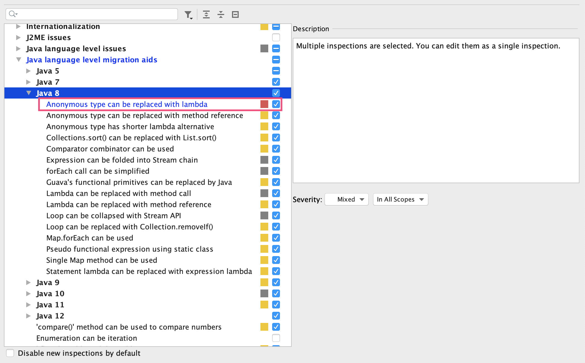
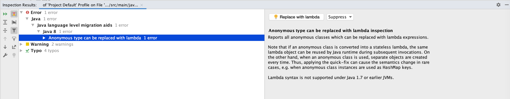
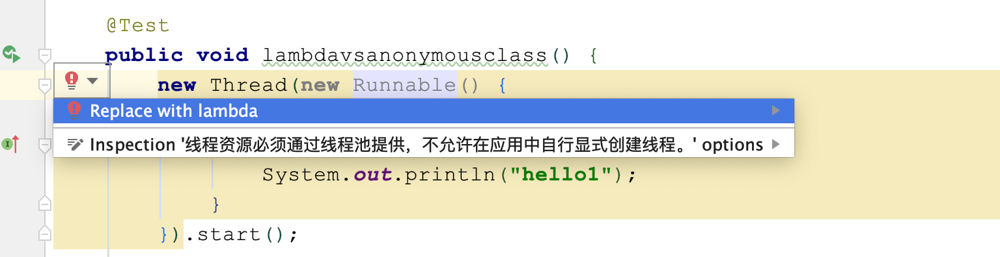
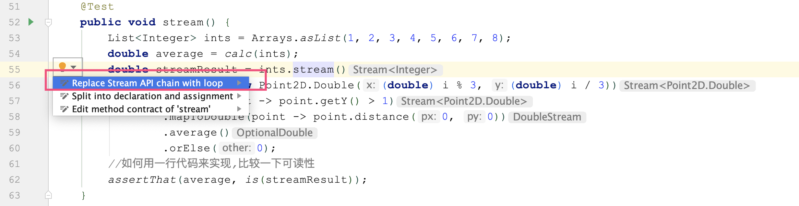
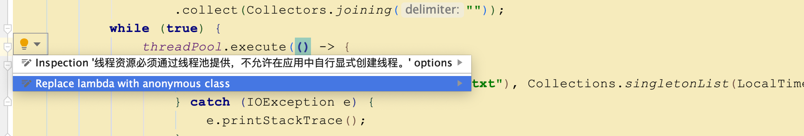
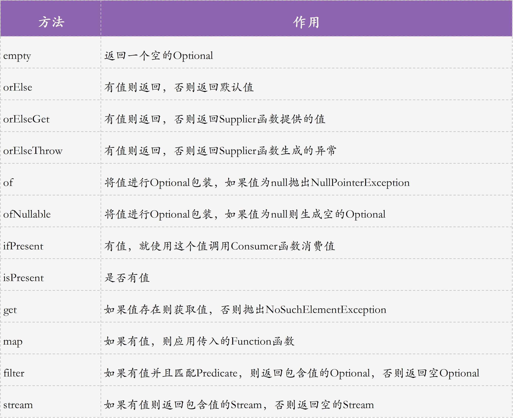
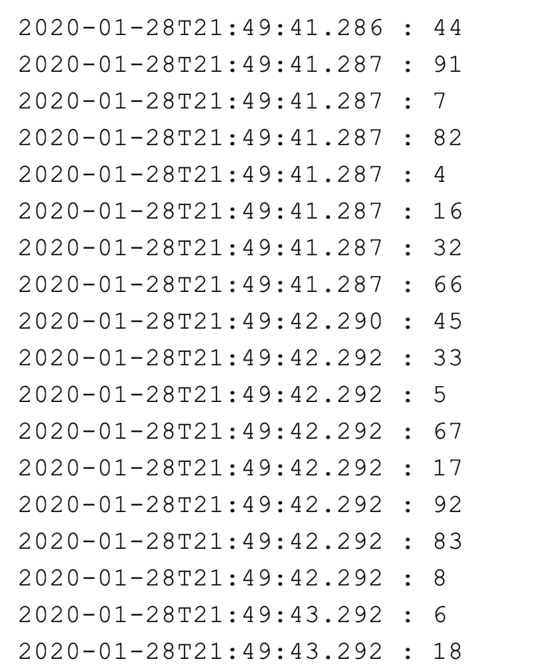
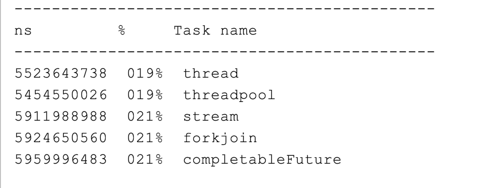

- 00 开篇词 业务代码真的会有这么多坑？.md.html
- 01 使用了并发工具类库，线程安全就高枕无忧了吗？.md.html
- 02 代码加锁：不要让“锁”事成为烦心事.md.html
- 03 线程池：业务代码最常用也最容易犯错的组件.md.html
- 04 连接池：别让连接池帮了倒忙.md.html
- 05 HTTP调用：你考虑到超时、重试、并发了吗？.md.html
- 06 2成的业务代码的Spring声明式事务，可能都没处理正确.md.html
- 07 数据库索引：索引并不是万能药.md.html
- 08 判等问题：程序里如何确定你就是你？.md.html
- 09 数值计算：注意精度、舍入和溢出问题.md.html
- 10 集合类：坑满地的List列表操作.md.html
- 11 空值处理：分不清楚的null和恼人的空指针.md.html
- 12 异常处理：别让自己在出问题的时候变为瞎子.md.html
- 13 日志：日志记录真没你想象的那么简单.md.html
- 14 文件IO：实现高效正确的文件读写并非易事.md.html
- 15 序列化：一来一回你还是原来的你吗？.md.html
- 16 用好Java 8的日期时间类，少踩一些“老三样”的坑.md.html
- 17 别以为“自动挡”就不可能出现OOM.md.html
- 18 当反射、注解和泛型遇到OOP时，会有哪些坑？.md.html
- 19 Spring框架：IoC和AOP是扩展的核心.md.html
- 20 Spring框架：框架帮我们做了很多工作也带来了复杂度.md.html
- 21 代码重复：搞定代码重复的三个绝招.md.html
- 22 接口设计：系统间对话的语言，一定要统一.md.html
- 23 缓存设计：缓存可以锦上添花也可以落井下石.md.html
- 24 业务代码写完，就意味着生产就绪了？.md.html
- 25 异步处理好用，但非常容易用错.md.html
- 26 数据存储：NoSQL与RDBMS如何取长补短、相辅相成？.md.html
- 27 数据源头：任何客户端的东西都不可信任.md.html
- 28 安全兜底：涉及钱时，必须考虑防刷、限量和防重.md.html
- 29 数据和代码：数据就是数据，代码就是代码.md.html
- 30 如何正确保存和传输敏感数据？.md.html
- 31 加餐1：带你吃透课程中Java 8的那些重要知识点（一）.md.html
- 32 加餐2：带你吃透课程中Java 8的那些重要知识点（二）.md.html
- 33 加餐3：定位应用问题，排错套路很重要.md.html
- 34 加餐4：分析定位Java问题，一定要用好这些工具（一）.md.html
- 35 加餐5：分析定位Java问题，一定要用好这些工具（二）.md.html
- 36 加餐6：这15年来，我是如何在工作中学习技术和英语的？.md.html
- 37 加餐7：程序员成长28计.md.html
- 38 加餐8：Java程序从虚拟机迁移到Kubernetes的一些坑.md.html
- 答疑篇：代码篇思考题集锦（一）.md.html
- 答疑篇：代码篇思考题集锦（三）.md.html
- 答疑篇：代码篇思考题集锦（二）.md.html
- 答疑篇：加餐篇思考题答案合集.md.html
- 答疑篇：安全篇思考题答案合集.md.html
- 答疑篇：设计篇思考题答案合集.md.html
- 结束语 写代码时，如何才能尽量避免踩坑？.md.html
31 加餐1：带你吃透课程中Java 8的那些重要知识点（一）
你好，我是朱晔。
Java 8 是目前最常用的 JDK 版本，在增强代码可读性、简化代码方面，相比 Java 7 增加了很多功能，比如 Lambda、Stream 流操作、并行流（ParallelStream）、Optional 可空类型、新日期时间类型等。
这个课程中的所有案例，都充分使用了 Java 8 的各种特性来简化代码。这也就意味着，如果你不了解这些特性的话，理解课程内的 Demo 可能会有些困难。因此，我将这些特性，单独拎了出来组成了两篇加餐。由于后面有单独一节课去讲 Java 8 的日期时间类型，所以这里就不赘述了。
如何在项目中用上 Lambda 表达式和 Stream 操作？
Java 8 的特性有很多，除了这两篇加餐外，我再给你推荐一本全面介绍 Java 8 的书，叫《Java 实战（第二版）》。此外，有同学在留言区问，怎么把 Lambda 表达式和 Stream 操作运用到项目中。其实，业务代码中可以使用这些特性的地方有很多。
这里，为了帮助你学习，并把这些特性用到业务开发中，我有三个小建议。
第一，从 List 的操作开始，先尝试把遍历 List 来筛选数据和转换数据的操作，使用 Stream 的 filter 和 map 实现，这是 Stream 最常用、最基本的两个 API。你可以重点看看接下来两节的内容来入门。
第二，使用高级的 IDE 来写代码，以此找到可以利用 Java 8 语言特性简化代码的地方。比如，对于 IDEA，我们可以把匿名类型使用 Lambda 替换的检测规则，设置为 Error 级别严重程度：

这样运行 IDEA 的 Inspect Code 的功能，可以在 Error 级别的错误中看到这个问题，引起更多关注，帮助我们建立使用 Lambda 表达式的习惯：

第三，如果你不知道如何把匿名类转换为 Lambda 表达式，可以借助 IDE 来重构：

反过来，如果你在学习课程内案例时，如果感觉阅读 Lambda 表达式和 Stream API 比较吃力，同样可以借助 IDE 把 Java 8 的写法转换为使用循环的写法：

或者是把 Lambda 表达式替换为匿名类：

Lambda 表达式
Lambda 表达式的初衷是，进一步简化匿名类的语法（不过实现上，Lambda 表达式并不是匿名类的语法糖），使 Java 走向函数式编程。对于匿名类，虽然没有类名，但还是要给出方法定义。这里有个例子，分别使用匿名类和 Lambda 表达式创建一个线程打印字符串：
//匿名类
new Thread(new Runnable(){
@Override
public void run(){
System.out.println("hello1");
}
}).start();
//Lambda表达式
new Thread(() -> System.out.println("hello2")).start();
那么，Lambda 表达式如何匹配 Java 的类型系统呢？
答案就是，函数式接口。
函数式接口是一种只有单一抽象方法的接口，使用 @FunctionalInterface 来描述，可以隐式地转换成 Lambda 表达式。使用 Lambda 表达式来实现函数式接口，不需要提供类名和方法定义，通过一行代码提供函数式接口的实例，就可以让函数成为程序中的头等公民，可以像普通数据一样作为参数传递，而不是作为一个固定的类中的固定方法。
那，函数式接口到底是什么样的呢？java.util.function 包中定义了各种函数式接口。比如，用于提供数据的 Supplier 接口，就只有一个 get 抽象方法，没有任何入参、有一个返回值：
@FunctionalInterface
public interface Supplier<T> {
/**
\* Gets a result.
*
\* @return a result
*/
T get();
}
我们可以使用 Lambda 表达式或方法引用，来得到 Supplier 接口的实例：
//使用Lambda表达式提供Supplier接口实现，返回OK字符串
Supplier<String> stringSupplier = ()->"OK";
//使用方法引用提供Supplier接口实现，返回空字符串
Supplier<String> supplier = String::new;
这样，是不是很方便？为了帮你掌握函数式接口及其用法，我再举几个使用 Lambda 表达式或方法引用来构建函数的例子：
//Predicate接口是输入一个参数，返回布尔值。我们通过and方法组合两个Predicate条件，判断是否值大于0并且是偶数
Predicate<Integer> positiveNumber = i -> i > 0;
Predicate<Integer> evenNumber = i -> i % 2 == 0;
assertTrue(positiveNumber.and(evenNumber).test(2));
//Consumer接口是消费一个数据。我们通过andThen方法组合调用两个Consumer，输出两行abcdefg
Consumer<String> println = System.out::println;
println.andThen(println).accept("abcdefg");
//Function接口是输入一个数据，计算后输出一个数据。我们先把字符串转换为大写，然后通过andThen组合另一个Function实现字符串拼接
Function<String, String> upperCase = String::toUpperCase;
Function<String, String> duplicate = s -> s.concat(s);
assertThat(upperCase.andThen(duplicate).apply("test"), is("TESTTEST"));
//Supplier是提供一个数据的接口。这里我们实现获取一个随机数
Supplier<Integer> random = ()->ThreadLocalRandom.current().nextInt();
System.out.println(random.get());
//BinaryOperator是输入两个同类型参数，输出一个同类型参数的接口。这里我们通过方法引用获得一个整数加法操作，通过Lambda表达式定义一个减法操作，然后依次调用
BinaryOperator<Integer> add = Integer::sum;
BinaryOperator<Integer> subtraction = (a, b) -> a - b;
assertThat(subtraction.apply(add.apply(1, 2), 3), is(0));
Predicate、Function 等函数式接口，还使用 default 关键字实现了几个默认方法。这样一来，它们既可以满足函数式接口只有一个抽象方法，又能为接口提供额外的功能：
@FunctionalInterface
public interface Function<T, R> {
R apply(T t);
default <V> Function<V, R> compose(Function<? super V, ? extends T> before) {
Objects.requireNonNull(before);
return (V v) -> apply(before.apply(v));
}
default <V> Function<T, V> andThen(Function<? super R, ? extends V> after) {
Objects.requireNonNull(after);
return (T t) -> after.apply(apply(t));
}
}
很明显，Lambda 表达式给了我们复用代码的更多可能性：我们可以把一大段逻辑中变化的部分抽象出函数式接口，由外部方法提供函数实现，重用方法内的整体逻辑处理。
不过需要注意的是，在自定义函数式接口之前，可以先确认下java.util.function 包中的 43 个标准函数式接口是否能满足需求，我们要尽可能重用这些接口，因为使用大家熟悉的标准接口可以提高代码的可读性。
使用 Java 8 简化代码
这一部分，我会通过几个具体的例子，带你感受一下使用 Java 8 简化代码的三个重要方面：
使用 Stream 简化集合操作；
使用 Optional 简化判空逻辑；
JDK8 结合 Lambda 和 Stream 对各种类的增强。
使用 Stream 简化集合操作
Lambda 表达式可以帮我们用简短的代码实现方法的定义，给了我们复用代码的更多可能性。利用这个特性，我们可以把集合的投影、转换、过滤等操作抽象成通用的接口，然后通过 Lambda 表达式传入其具体实现，这也就是 Stream 操作。
我们看一个具体的例子。这里有一段 20 行左右的代码，实现了如下的逻辑：
把整数列表转换为 Point2D 列表；
遍历 Point2D 列表过滤出 Y 轴 >1 的对象；
计算 Point2D 点到原点的距离；
累加所有计算出的距离，并计算距离的平均值。
private static double calc(List<Integer> ints) {
//临时中间集合
List<Point2D> point2DList = new ArrayList<>();
for (Integer i : ints) {
point2DList.add(new Point2D.Double((double) i % 3, (double) i / 3));
}
//临时变量，纯粹是为了获得最后结果需要的中间变量
double total = 0;
int count = 0;
for (Point2D point2D : point2DList) {
//过滤
if (point2D.getY() > 1) {
//算距离
double distance = point2D.distance(0, 0);
total += distance;
count++;
}
}
//注意count可能为0的可能
return count >0 ? total / count : 0;
}
现在，我们可以使用 Stream 配合 Lambda 表达式来简化这段代码。简化后一行代码就可以实现这样的逻辑，更重要的是代码可读性更强了，通过方法名就可以知晓大概是在做什么事情。比如：
map 方法传入的是一个 Function，可以实现对象转换；
filter 方法传入一个 Predicate，实现对象的布尔判断，只保留返回 true 的数据；
mapToDouble 用于把对象转换为 double；
通过 average 方法返回一个 OptionalDouble，代表可能包含值也可能不包含值的可空 double。
下面的第三行代码，就实现了上面方法的所有工作：
List<Integer> ints = Arrays.asList(1, 2, 3, 4, 5, 6, 7, 8);
double average = calc(ints);
double streamResult = ints.stream()
.map(i -> new Point2D.Double((double) i % 3, (double) i / 3))
.filter(point -> point.getY() > 1)
.mapToDouble(point -> point.distance(0, 0))
.average()
.orElse(0);
//如何用一行代码来实现，比较一下可读性
assertThat(average, is(streamResult));
到这里，你可能会问了，OptionalDouble 又是怎么回事儿？
有关 Optional 可空类型
其实，类似 OptionalDouble、OptionalInt、OptionalLong 等，是服务于基本类型的可空对象。此外，Java8 还定义了用于引用类型的 Optional 类。使用 Optional，不仅可以避免使用 Stream 进行级联调用的空指针问题；更重要的是，它提供了一些实用的方法帮我们避免判空逻辑。
如下是一些例子，演示了如何使用 Optional 来避免空指针，以及如何使用它的 fluent API 简化冗长的 if-else 判空逻辑：
@Test(expected = IllegalArgumentException.class)
public void optional() {
//通过get方法获取Optional中的实际值
assertThat(Optional.of(1).get(), is(1));
//通过ofNullable来初始化一个null，通过orElse方法实现Optional中无数据的时候返回一个默认值
assertThat(Optional.ofNullable(null).orElse("A"), is("A"));
//OptionalDouble是基本类型double的Optional对象，isPresent判断有无数据
assertFalse(OptionalDouble.empty().isPresent());
//通过map方法可以对Optional对象进行级联转换，不会出现空指针，转换后还是一个Optional
assertThat(Optional.of(1).map(Math::incrementExact).get(), is(2));
//通过filter实现Optional中数据的过滤，得到一个Optional，然后级联使用orElse提供默认值
assertThat(Optional.of(1).filter(integer -> integer % 2 == 0).orElse(null), is(nullValue()));
//通过orElseThrow实现无数据时抛出异常
Optional.empty().orElseThrow(IllegalArgumentException::new);
}
我把 Optional 类的常用方法整理成了一张图，你可以对照案例再复习一下：

Java 8 类对于函数式 API 的增强
除了 Stream 之外，Java 8 中有很多类也都实现了函数式的功能。
比如，要通过 HashMap 实现一个缓存的操作，在 Java 8 之前我们可能会写出这样的 getProductAndCache 方法：先判断缓存中是否有值；如果没有值，就从数据库搜索取值；最后，把数据加入缓存。
private Map<Long, Product> cache = new ConcurrentHashMap<>();
private Product getProductAndCache(Long id) {
Product product = null;
//Key存在，返回Value
if (cache.containsKey(id)) {
product = cache.get(id);
} else {
//不存在，则获取Value
//需要遍历数据源查询获得Product
for (Product p : Product.getData()) {
if (p.getId().equals(id)) {
product = p;
break;
}
}
//加入ConcurrentHashMap
if (product != null)
cache.put(id, product);
}
return product;
}
@Test
public void notcoolCache() {
getProductAndCache(1L);
getProductAndCache(100L);
System.out.println(cache);
assertThat(cache.size(), is(1));
assertTrue(cache.containsKey(1L));
}
而在 Java 8 中，我们利用 ConcurrentHashMap 的 computeIfAbsent 方法，用一行代码就可以实现这样的繁琐操作：
private Product getProductAndCacheCool(Long id) {
return cache.computeIfAbsent(id, i -> //当Key不存在的时候提供一个Function来代表根据Key获取Value的过程
Product.getData().stream()
.filter(p -> p.getId().equals(i)) //过滤
.findFirst() //找第一个，得到Optional<Product>
.orElse(null)); //如果找不到Product，则使用null
}
@Test
public void coolCache()
{
getProductAndCacheCool(1L);
getProductAndCacheCool(100L);
System.out.println(cache);
assertThat(cache.size(), is(1));
assertTrue(cache.containsKey(1L));
}
computeIfAbsent 方法在逻辑上相当于：
if (map.get(key) == null) {
V newValue = mappingFunction.apply(key);
if (newValue != null)
map.put(key, newValue);
}
又比如，利用 Files.walk 返回一个 Path 的流，通过两行代码就能实现递归搜索 +grep 的操作。整个逻辑是：递归搜索文件夹，查找所有的.java 文件；然后读取文件每一行内容，用正则表达式匹配 public class 关键字；最后输出文件名和这行内容。
@Test
public void filesExample() throws IOException {
//无限深度，递归遍历文件夹
try (Stream<Path> pathStream = Files.walk(Paths.get("."))) {
pathStream.filter(Files::isRegularFile) //只查普通文件
.filter(FileSystems.getDefault().getPathMatcher("glob:**/*.java")::matches) //搜索java源码文件
.flatMap(ThrowingFunction.unchecked(path ->
Files.readAllLines(path).stream() //读取文件内容，转换为Stream<List>
.filter(line -> Pattern.compile("public class").matcher(line).find()) //使用正则过滤带有public class的行
.map(line -> path.getFileName() + " >> " + line))) //把这行文件内容转换为文件名+行
.forEach(System.out::println); //打印所有的行
}
}
输出结果如下：

我再和你分享一个小技巧吧。因为 Files.readAllLines 方法会抛出一个受检异常（IOException），所以我使用了一个自定义的函数式接口，用 ThrowingFunction 包装这个方法，把受检异常转换为运行时异常，让代码更清晰：
@FunctionalInterface
public interface ThrowingFunction<T, R, E extends Throwable> {
static <T, R, E extends Throwable> Function<T, R> unchecked(ThrowingFunction<T, R, E> f) {
return t -> {
try {
return f.apply(t);
} catch (Throwable e) {
throw new RuntimeException(e);
}
};
}
R apply(T t) throws E;
}
如果用 Java 7 实现类似逻辑的话，大概需要几十行代码，你可以尝试下。
并行流
前面我们看到的 Stream 操作都是串行 Stream，操作只是在一个线程中执行，此外 Java 8 还提供了并行流的功能：通过 parallel 方法，一键把 Stream 转换为并行操作提交到线程池处理。
比如，如下代码通过线程池来并行消费处理 1 到 100：
IntStream.rangeClosed(1,100).parallel().forEach(i->{
System.out.println(LocalDateTime.now() + " : " + i);
try {
Thread.sleep(1000);
} catch (InterruptedException e) { }
});
并行流不确保执行顺序，并且因为每次处理耗时 1 秒，所以可以看到在 8 核机器上，数组是按照 8 个一组 1 秒输出一次：

在这个课程中，有很多类似使用 threadCount 个线程对某个方法总计执行 taskCount 次操作的案例，用于演示并发情况下的多线程问题或多线程处理性能。除了会用到并行流，我们有时也会使用线程池或直接使用线程进行类似操作。为了方便你对比各种实现，这里我一次性给出实现此类操作的五种方式。
为了测试这五种实现方式，我们设计一个场景：使用 20 个线程（threadCount）以并行方式总计执行 10000 次（taskCount）操作。因为单个任务单线程执行需要 10 毫秒（任务代码如下），也就是每秒吞吐量是 100 个操作，那 20 个线程 QPS 是 2000，执行完 10000 次操作最少耗时 5 秒。
private void increment(AtomicInteger atomicInteger) {
atomicInteger.incrementAndGet();
try {
TimeUnit.MILLISECONDS.sleep(10);
} catch (InterruptedException e) {
e.printStackTrace();
}
}
现在我们测试一下这五种方式，是否都可以利用更多的线程并行执行操作。
第一种方式是使用线程。直接把任务按照线程数均匀分割，分配到不同的线程执行，使用 CountDownLatch 来阻塞主线程，直到所有线程都完成操作。这种方式，需要我们自己分割任务：
private int thread(int taskCount, int threadCount) throws InterruptedException {
//总操作次数计数器
AtomicInteger atomicInteger = new AtomicInteger();
//使用CountDownLatch来等待所有线程执行完成
CountDownLatch countDownLatch = new CountDownLatch(threadCount);
//使用IntStream把数字直接转为Thread
IntStream.rangeClosed(1, threadCount).mapToObj(i -> new Thread(() -> {
//手动把taskCount分成taskCount份，每一份有一个线程执行
IntStream.rangeClosed(1, taskCount / threadCount).forEach(j -> increment(atomicInteger));
//每一个线程处理完成自己那部分数据之后，countDown一次
countDownLatch.countDown();
})).forEach(Thread::start);
//等到所有线程执行完成
countDownLatch.await();
//查询计数器当前值
return atomicInteger.get();
}
第二种方式是，使用 Executors.newFixedThreadPool 来获得固定线程数的线程池，使用 execute 提交所有任务到线程池执行，最后关闭线程池等待所有任务执行完成：
private int threadpool(int taskCount, int threadCount) throws InterruptedException {
//总操作次数计数器
AtomicInteger atomicInteger = new AtomicInteger();
//初始化一个线程数量=threadCount的线程池
ExecutorService executorService = Executors.newFixedThreadPool(threadCount);
//所有任务直接提交到线程池处理
IntStream.rangeClosed(1, taskCount).forEach(i -> executorService.execute(() -> increment(atomicInteger)));
//提交关闭线程池申请，等待之前所有任务执行完成
executorService.shutdown();
executorService.awaitTermination(1, TimeUnit.HOURS);
//查询计数器当前值
return atomicInteger.get();
}
第三种方式是，使用 ForkJoinPool 而不是普通线程池执行任务。
ForkJoinPool 和传统的 ThreadPoolExecutor 区别在于，前者对于 n 并行度有 n 个独立队列，后者是共享队列。如果有大量执行耗时比较短的任务，ThreadPoolExecutor 的单队列就可能会成为瓶颈。这时，使用 ForkJoinPool 性能会更好。
因此，ForkJoinPool 更适合大任务分割成许多小任务并行执行的场景，而 ThreadPoolExecutor 适合许多独立任务并发执行的场景。
在这里，我们先自定义一个具有指定并行数的 ForkJoinPool，再通过这个 ForkJoinPool 并行执行操作：
private int forkjoin(int taskCount, int threadCount) throws InterruptedException {
//总操作次数计数器
AtomicInteger atomicInteger = new AtomicInteger();
//自定义一个并行度=threadCount的ForkJoinPool
ForkJoinPool forkJoinPool = new ForkJoinPool(threadCount);
//所有任务直接提交到线程池处理
forkJoinPool.execute(() -> IntStream.rangeClosed(1, taskCount).parallel().forEach(i -> increment(atomicInteger)));
//提交关闭线程池申请，等待之前所有任务执行完成
forkJoinPool.shutdown();
forkJoinPool.awaitTermination(1, TimeUnit.HOURS);
//查询计数器当前值
return atomicInteger.get();
}
第四种方式是，直接使用并行流，并行流使用公共的 ForkJoinPool，也就是 ForkJoinPool.commonPool()。
公共的 ForkJoinPool 默认的并行度是 CPU 核心数 -1，原因是对于 CPU 绑定的任务分配超过 CPU 个数的线程没有意义。由于并行流还会使用主线程执行任务，也会占用一个 CPU 核心，所以公共 ForkJoinPool 的并行度即使 -1 也能用满所有 CPU 核心。
这里，我们通过配置强制指定（增大）了并行数，但因为使用的是公共 ForkJoinPool，所以可能会存在干扰，你可以回顾下第 3 讲有关线程池混用产生的问题：
private int stream(int taskCount, int threadCount) {
//设置公共ForkJoinPool的并行度
System.setProperty("java.util.concurrent.ForkJoinPool.common.parallelism", String.valueOf(threadCount));
//总操作次数计数器
AtomicInteger atomicInteger = new AtomicInteger();
//由于我们设置了公共ForkJoinPool的并行度，直接使用parallel提交任务即可
IntStream.rangeClosed(1, taskCount).parallel().forEach(i -> increment(atomicInteger));
//查询计数器当前值
return atomicInteger.get();
}
第五种方式是，使用 CompletableFuture 来实现。CompletableFuture.runAsync 方法可以指定一个线程池，一般会在使用 CompletableFuture 的时候用到：
private int completableFuture(int taskCount, int threadCount) throws InterruptedException, ExecutionException {
//总操作次数计数器
AtomicInteger atomicInteger = new AtomicInteger();
//自定义一个并行度=threadCount的ForkJoinPool
ForkJoinPool forkJoinPool = new ForkJoinPool(threadCount);
//使用CompletableFuture.runAsync通过指定线程池异步执行任务
CompletableFuture.runAsync(() -> IntStream.rangeClosed(1, taskCount).parallel().forEach(i -> increment(atomicInteger)), forkJoinPool).get();
//查询计数器当前值
return atomicInteger.get();
}
上面这五种方法都可以实现类似的效果：

可以看到，这 5 种方式执行完 10000 个任务的耗时都在 5.4 秒到 6 秒之间。这里的结果只是证明并行度的设置是有效的，并不是性能比较。
如果你的程序对性能要求特别敏感，建议通过性能测试根据场景决定适合的模式。一般而言，使用线程池（第二种）和直接使用并行流（第四种）的方式在业务代码中比较常用。但需要注意的是，我们通常会重用线程池，而不会像 Demo 中那样在业务逻辑中直接声明新的线程池，等操作完成后再关闭。
另外需要注意的是，在上面的例子中我们一定是先运行 stream 方法再运行 forkjoin 方法，对公共 ForkJoinPool 默认并行度的修改才能生效。
这是因为 ForkJoinPool 类初始化公共线程池是在静态代码块里，加载类时就会进行的，如果 forkjoin 方法中先使用了 ForkJoinPool，即便 stream 方法中设置了系统属性也不会起作用。因此我的建议是，设置 ForkJoinPool 公共线程池默认并行度的操作，应该放在应用启动时设置。
重点回顾
今天，我和你简单介绍了 Java 8 中最重要的几个功能，包括 Lambda 表达式、Stream 流式操作、Optional 可空对象、并行流操作。这些特性，可以帮助我们写出简单易懂、可读性更强的代码。特别是使用 Stream 的链式方法，可以用一行代码完成之前几十行代码的工作。
因为 Stream 的 API 非常多，使用方法也是千变万化，因此我会在下一讲和你详细介绍 Stream API 的一些使用细节。
今天用到的代码，我都放在了 GitHub 上，你可以点击这个链接查看。
思考与讨论
检查下代码中是否有使用匿名类，以及通过遍历 List 进行数据过滤、转换和聚合的代码，看看能否使用 Lambda 表达式和 Stream 来重新实现呢？
对于并行流部分的并行消费处理 1 到 100 的例子，如果把 forEach 替换为 forEachOrdered，你觉得会发生什么呢？
关于 Java 8，你还有什么使用心得吗？我是朱晔，欢迎在评论区与我留言分享你的想法，也欢迎你把这篇文章分享给你的朋友或同事，一起交流。